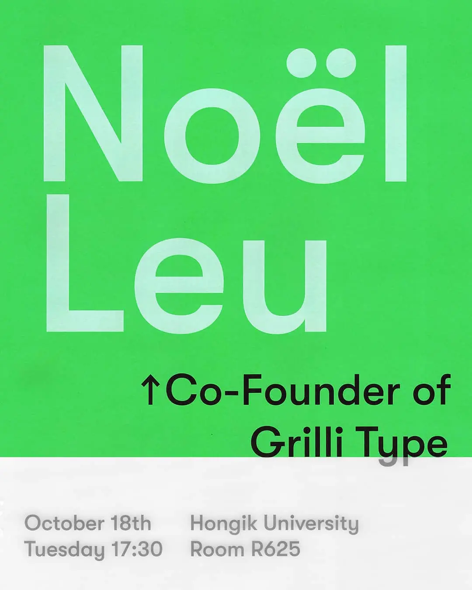

디자인 콜로키움 초청 포스터

홍익대학교 시각디자인과에서 진행하는 초청 강연 디자인 콜로키움의 홍보 포스터를 제작했습니다. 이번 10월에는 홍익대학교에서 Grilli Type을 설립한 Noël Leu을 초청하여 강연 듣습니다. 그래서 Grilli Type 의 대담한 색면 그래픽에 영감을 받아 포스터를 만들었습니다. 사용한 폰트는 GT Walsheim 으로, Noël Leu이 디자인했습니다. 이 폰트, 아주 멋지고 아름답습니다!